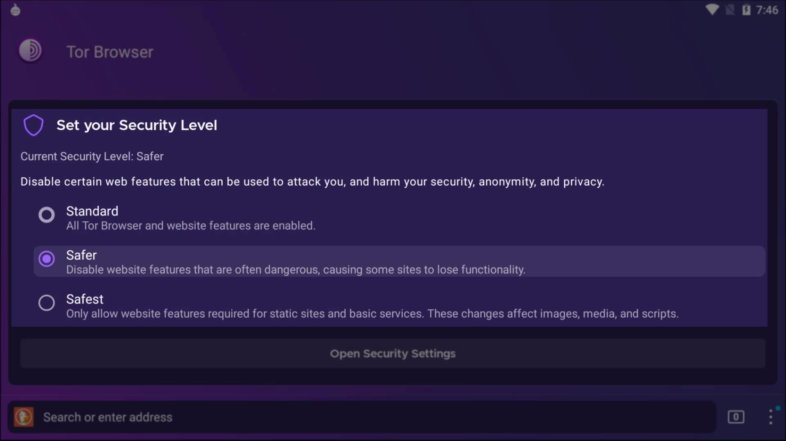
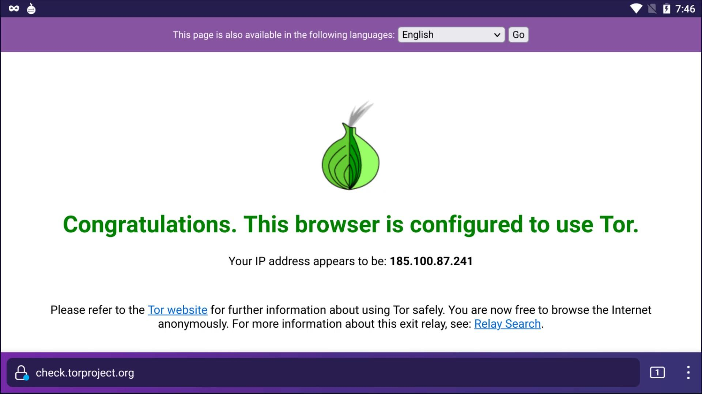
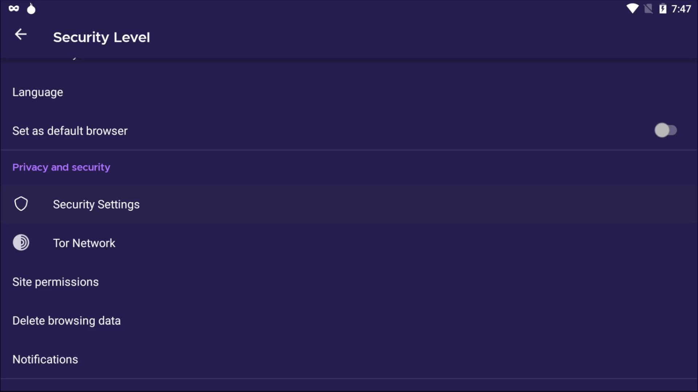
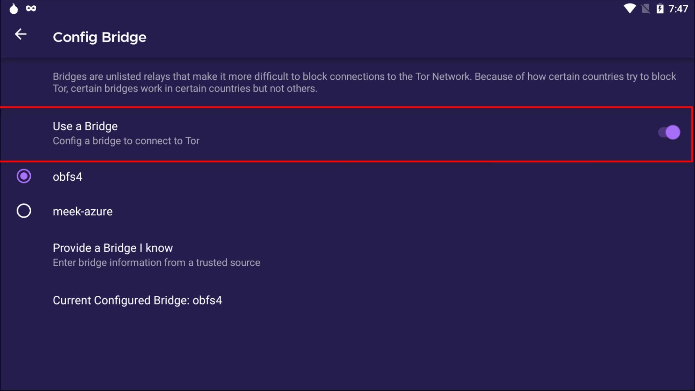
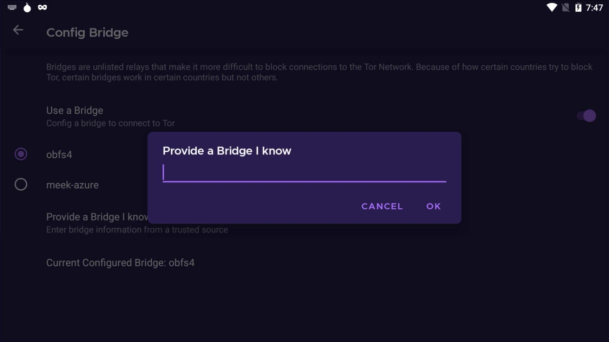

Android Tor Browser Installation
While you don't have access to your desktop devices, you can use the Tor browser developed specifically for the Android platform to securely access the Tor network on your Android device. First, let's open PlayStore. To get the browser, simply search for " Tor Browser " on the PlayStore . Let's install the application published by Tor developers.

After the installation is completed, let's open the application and click the " Connect " button and wait for the browser to connect to the tor network.


After the selection, just type the web address you want to go to in the bar here. I visit check.torproject.org to confirm that I am connected to the tor network.

And as you can see I can confirm here that I am connected to the tor network. So, i can use this application to surf the Tor network with my Android device when necessary.


When we look at the settings of the browser, there are settings customized for Tor in addition to the settings of standard web browsers.


In the Tor network section, you can see the connection status to the tor network and configure a bridge if you want.


This will automatically provide a bridge connection. Also, if you wish, you can manually enter bridge information from the "provide a bridge i know" section.
The other settings here are standard settings that you already know. We already talked about all of these settings when describing the Tor browser desktop version. The settings we mentioned are exactly the same for this browser. You can change it if you need.